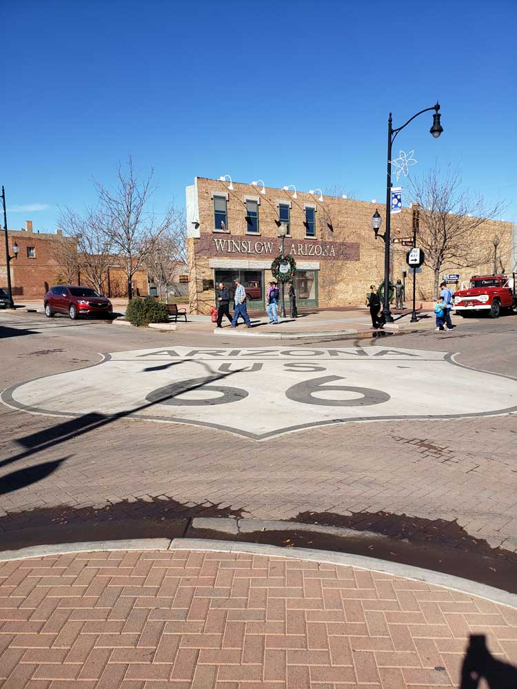
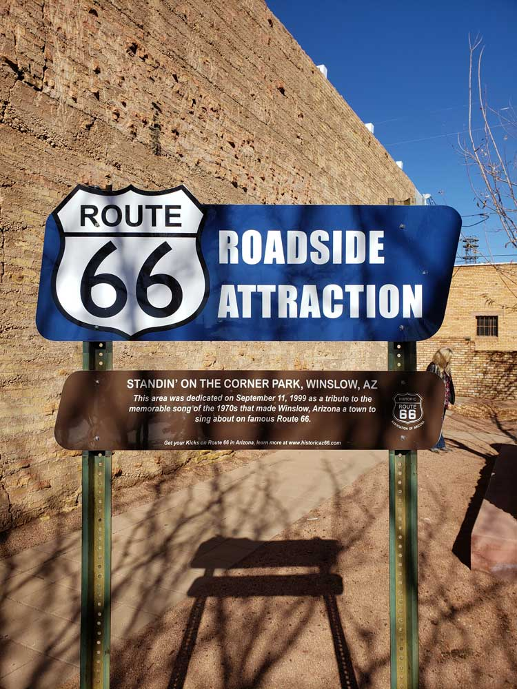
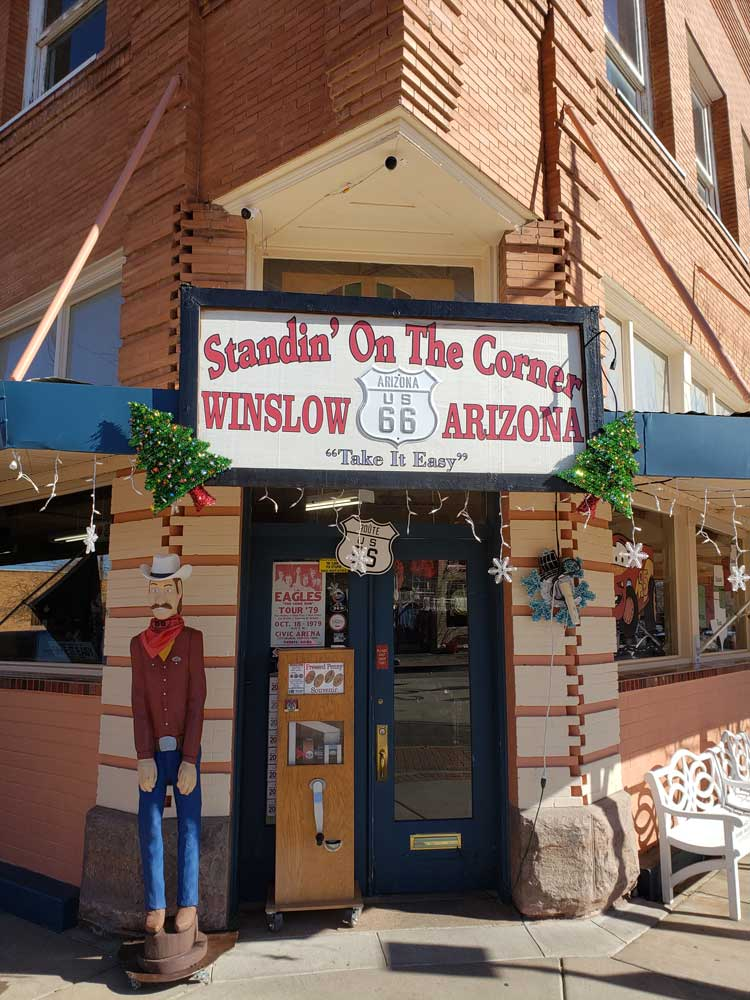
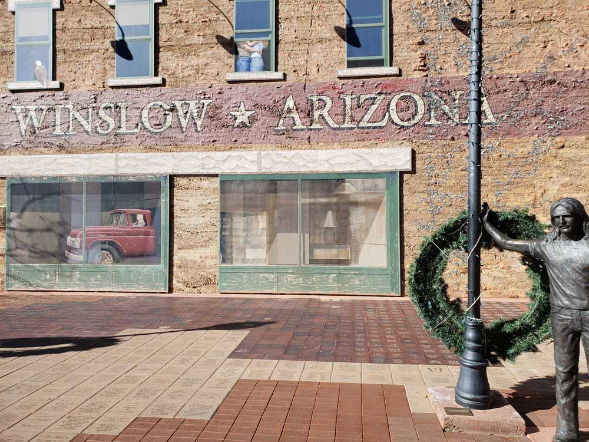
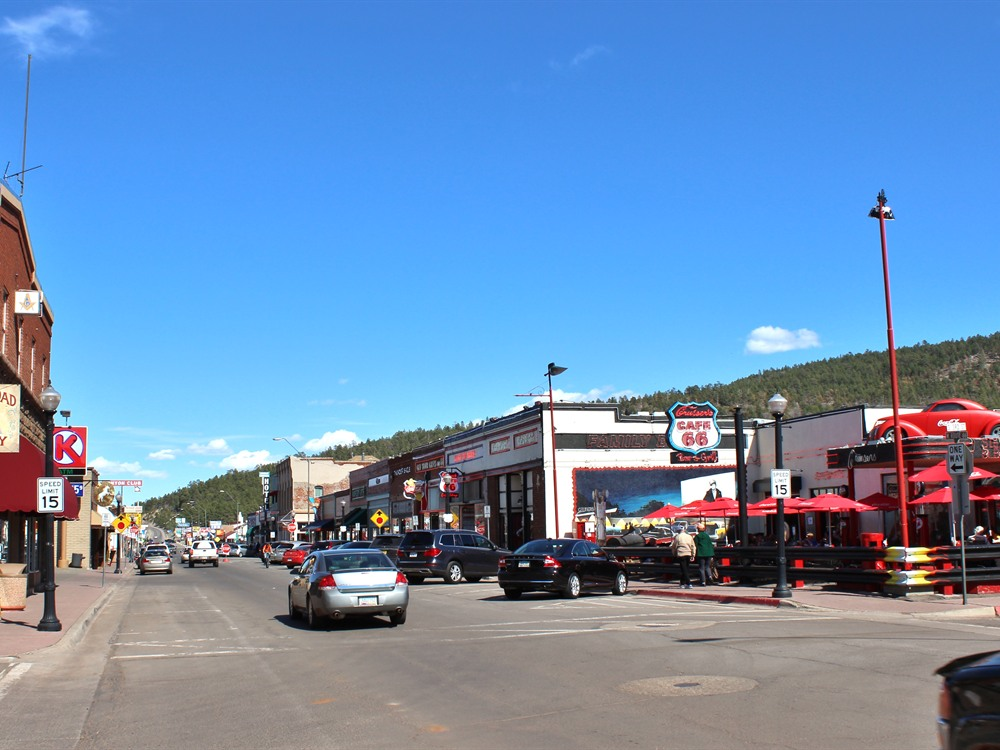
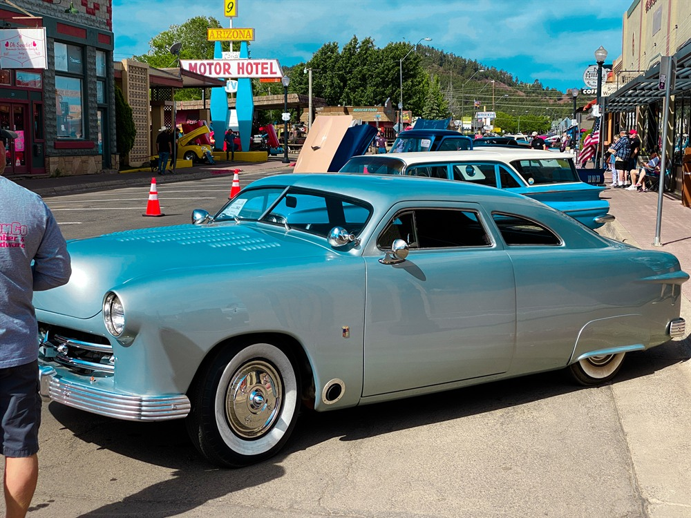
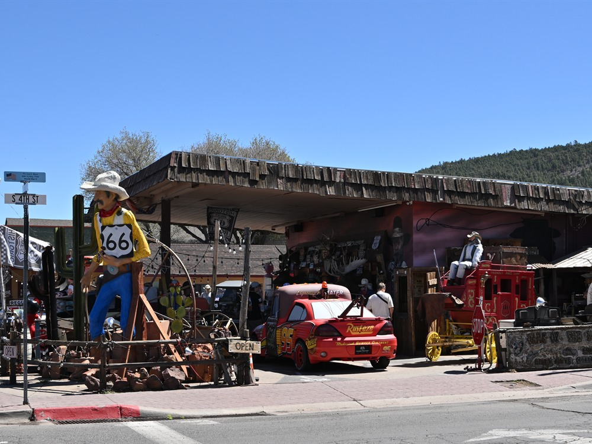
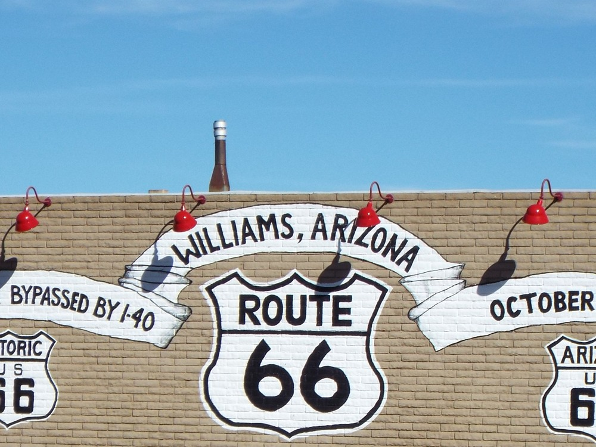
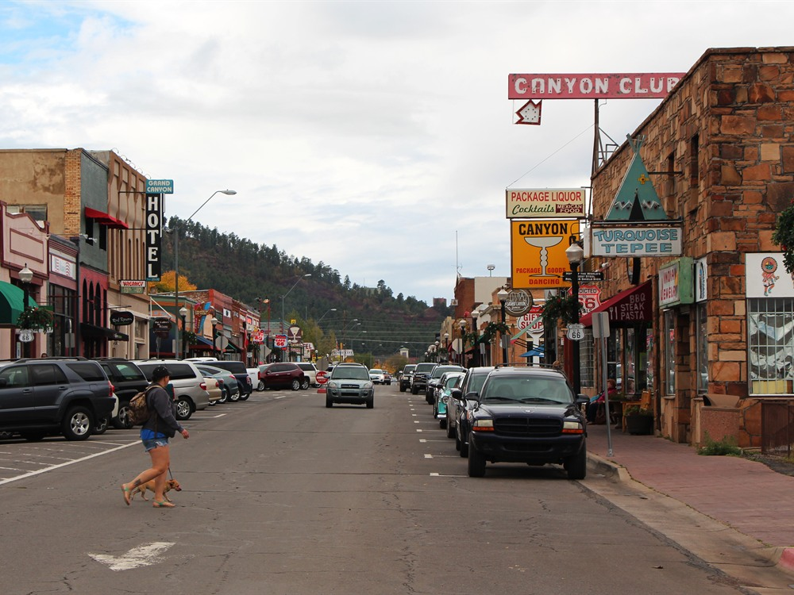
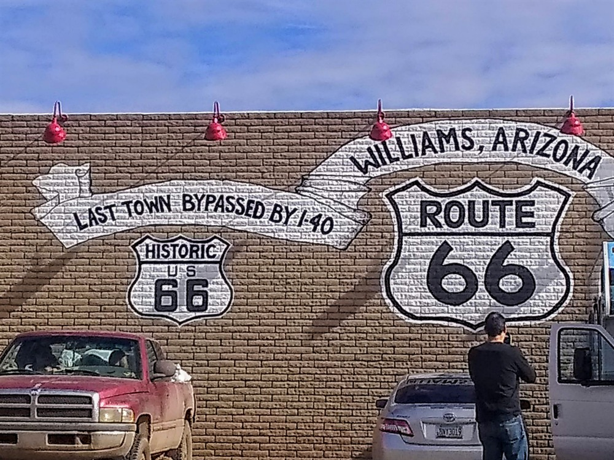

City approximately 57 miles (92 km) southeast of Flagstaff, where U.S. Route 66 originally routed through the city and achieved national fame in 1972 for the Eagles / Jackson Browne song “Take It Easy”
General Information
Individual attractions, shops, and restaurants operate on varying schedules
Individual attractions, museums, and events may have separate fees
How to Get There
From Flagstaff (55 mi): Take I‑40 E from Flagstaff and continue east for approximately 55 miles to reach Winslow along historic Route 66.
Overview
Williams, Arizona is one of the most celebrated towns along Historic Route 66 and is widely known as the "Gateway to the Grand Canyon." Nestled among the ponderosa pine forests of northern Arizona, Williams preserves the spirit of the Mother Road through its historic downtown district, vintage motels, classic diners, neon signs, and restored Route 66 landmarks.
The town is significant as the last town on the entire highway to be bypassed by Interstate 40, and it is popular because it combines Route 66 nostalgia, Old West charm, and easy access to some of the Southwest’s most famous natural attractions. Visitors come to ride the Grand Canyon Railway, stroll the historic downtown, and use the town as a base for the Grand Canyon about 60 miles north.
Williams was founded in 1881 and named for mountain man Bill Williams. The railroad arrived in 1882, and the Grand Canyon Railway began carrying tourists to the canyon in 1901. Passenger service ended in 1968 and was revived in 1989. Route 66 carried travelers through town for decades, and in 1984 Williams became the last Route 66 town to be bypassed by the interstate.
Sightseeing centers on the historic downtown district, the Grand Canyon Railway depot and hotel, and the Route 66 shops, diners and neon signs. Bearizona Wildlife Park, a drive-through wildlife park, and the Grand Canyon Deer Farm are popular family stops, and the scenic drive to the Grand Canyon is a highlight.
Williams preserves its past in the historic business district, the restored Grand Canyon Railway depot and local attractions such as Pete’s Route 66 Gas Station Museum. Museums, shops and classic automobile events celebrate Route 66 and railroad history.
Williams is surrounded by the Kaibab National Forest, with Bill Williams Mountain towering over the town. Kaibab Lake, Dogtown Lake and Cataract Lake offer fishing, camping and picnicking, and hiking trails lead into the surrounding pine forest.
At about 6,700 feet, Williams has four seasons. Summers are mild, with highs in the 80s°F and monsoon storms in July and August, while winters are cold and snowy, with highs in the 40s°F. Spring and fall are comfortable, and the holiday season is popular for the railway’s seasonal trains.
Route 66 Heritage
Route 66 played a central role in Williams' development as a tourism destination. For decades, travelers heading to the Grand Canyon used the town as a major stopover, helping create a thriving economy built around roadside hospitality, lodging, restaurants, and service stations.
- Historic Route 66 Community: One of the best-preserved Route 66 towns in Arizona.
- Last Route 66 Bypass: The final section of Route 66 to be replaced by Interstate 40.
- Grand Canyon Gateway: Long considered the primary gateway for Grand Canyon visitors.
- Preserved Downtown: Features numerous original Route 66-era buildings and businesses.
Historic Downtown Williams
Historic Route 66 runs directly through downtown Williams, creating a walkable district filled with classic Americana and roadside architecture. Visitors can experience much of the atmosphere that defined Route 66 travel during its peak years.
- Historic Route 66 Alignment: Original roadway still passes through the center of town.
- Vintage Neon Signs: Many historic businesses continue to display restored neon signage.
- Classic Storefronts: Preserved architecture dating to the highway's golden age.
- Route 66 Murals: Public artwork celebrating the history of the Mother Road.
Famous Route 66 Attractions
- Route 66 Shield Sign: One of the most photographed Route 66 landmarks in Arizona.
- Pete's Route 66 Gas Station Museum: Restored vintage gas station featuring Route 66 memorabilia and automotive artifacts.
- Grand Canyon Hotel: Historic hotel dating to the late nineteenth century.
- Historic Motor Courts: Classic Route 66 lodging properties preserving mid-century travel culture.
- Route 66 Visitor Center: Provides maps, exhibits, and travel information for Route 66 enthusiasts.
Grand Canyon Railway
One of Williams' most famous attractions is the historic Grand Canyon Railway, which provides passenger service between Williams and Grand Canyon National Park. The railway offers visitors the opportunity to experience a classic train journey through northern Arizona landscapes while following a tradition that dates back more than a century.
- Historic Passenger Railroad: Connects Williams with the South Rim of Grand Canyon National Park.
- Vintage Rail Experience: Features restored railcars and historic locomotives.
- Popular Family Attraction: One of the town's most visited destinations.
- Transportation Heritage: Highlights the region's railroad history.
Nearby Attractions
In addition to its Route 66 heritage, Williams serves as a convenient base for exploring northern Arizona's natural and recreational attractions.
- Grand Canyon National Park: Located approximately one hour from Williams.
- Bearizona Wildlife Park: Drive-through wildlife experience featuring North American animals.
- Kaibab National Forest: Offers opportunities for hiking, camping, and scenic drives.
- Bill Williams Mountain: Popular destination for outdoor recreation and sightseeing.
- Historic Route 66 Side Trips: Close to Seligman, Ash Fork, and other notable Arizona Route 66 communities.
Annual Events
Williams hosts several events celebrating classic cars, Route 66 culture, railroad history, and the American Southwest.
- Historic Route 66 Car Show: One of Arizona's premier classic automobile events.
- Route 66 Festivals: Celebrations featuring live entertainment and vintage vehicles.
- Railroad-Themed Events: Programs associated with the Grand Canyon Railway.
- Holiday Attractions: Seasonal events including Polar Express train experiences.
Why Visit Williams?
- Authentic Route 66 Atmosphere: One of the best-preserved Route 66 towns in the United States.
- Historic Downtown: Walkable district filled with Route 66 landmarks and businesses.
- Grand Canyon Access: Convenient gateway to one of America's most famous national parks.
- Classic Motels and Diners: Offers a genuine Mother Road travel experience.
- Year-Round Attractions: Combines history, outdoor recreation, and family-friendly activities.
This article uses material from Route 66 travel resources, Williams tourism publications, and historical references describing Williams, Arizona's Route 66 heritage, historic downtown district, Grand Canyon Railway, visitor attractions, museums, and role as the Gateway to the Grand Canyon. Sources include the Williams-Grand Canyon Chamber of Commerce, Grand Canyon Railway, Bearizona, National Weather Service climate data, Williams tourism resources, Route 66 travel guides, and historical preservation organizations documenting Williams' significance on Historic Route 66.












